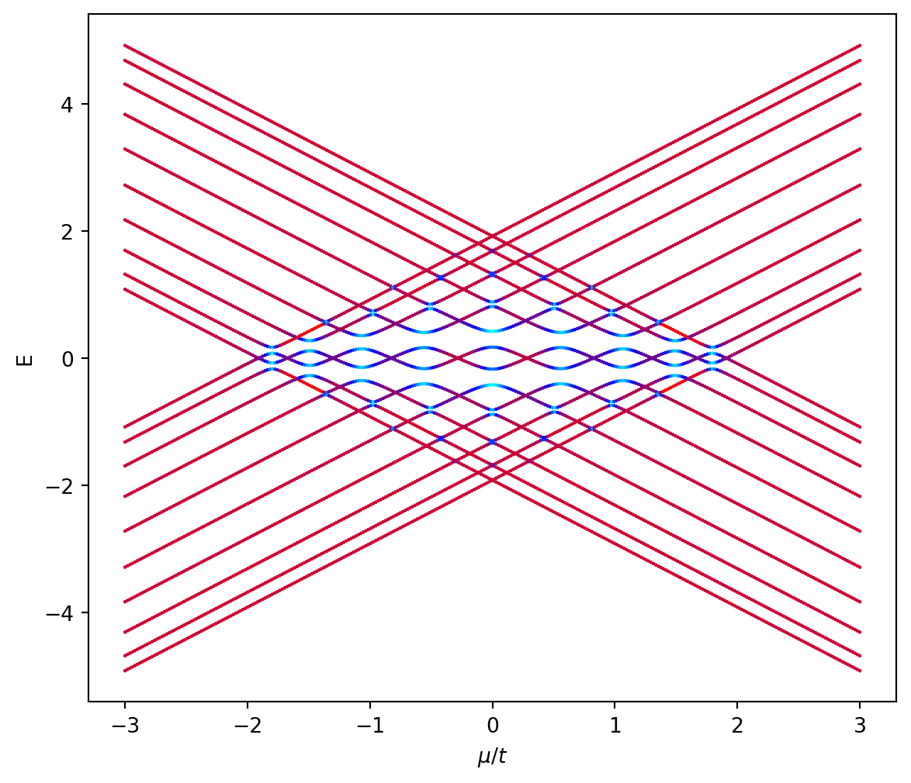

for i inrange(0,Nμ,20): fig,ax=plt.subplots(figsize=(5, 4)) ax.plot(kdist,Ek[i].T) ax.set_xticks(knode) ax.set_title("μ="+str(M[i]),fontsize=10) ax.grid(True) ax.set_xticklabels(["-π",0,"π"])
C:\Users\gozu0\AppData\Local\Temp\ipykernel_10676\1760376919.py:2: RuntimeWarning: More than 20 figures have been opened. Figures created through the pyplot interface (`matplotlib.pyplot.figure`) are retained until explicitly closed and may consume too much memory. (To control this warning, see the rcParam `figure.max_open_warning`). Consider using `matplotlib.pyplot.close()`.
fig,ax=plt.subplots(figsize=(5, 4))
3.2 Fase de Zak
Code
def Zak_Ph(model): Nk=500 ptsK=[[0.],[1.]] # Debe ser la 1ZB kpts, kdist, knode = model.k_path(ptsK,Nk,report=False) ϵk,evec=model.solve_all(kpts,eig_vectors=True) Zak=[]for band inrange(len(evec)): eveb=evec[band] Prod=prod([ np.vdot(eveb[i-1],eveb[i]) for i inrange(1,Nk)]) Zak.append(-imag( np.log(Prod) ))return Zak
fig, (ax1,ax2) = plt.subplots(2,figsize=(8, 8))ax1.plot(M,PhZak.T[0])ax1.set_xlabel('$\mu/t$')ax1.set_ylabel('Fase de Zak \n (banda valencia)')ax1.grid(True)ax2.plot(M,PhZak.T[1])ax2.set_xlabel('$\mu/t$')ax2.set_ylabel('Fase de Zak \n (banda conducción)')ax2.grid(True)ax2.grid(True)
3.3 Estados de borde
Code
NL=50KC_Cortado=[KitaevChain[i].cut_piece(NL,0,glue_edgs=False) for i inrange(Nμ)]KC_Cortado[1].visualize(0,1)

Code
# Obtenemos todos los estadosevals,evecs,ed=[],[],[]for i inrange(Nμ): Ek,evec=KC_Cortado[i].solve_all(eig_vectors=True) evals.append(Ek) evecs.append(evec) ed.append(KC_Cortado[i].get_num_orbitals()//2) # Energia al centro del espectro, debe corresponder con el edo de bordeevals=np.array(evals)
IPR=[list(map(ipr,evecs[i])) for i inrange(Nμ)]# Mostramos estados de bordefor i inrange(0,Nμ,20): (fig,ax)=KC_Cortado[i].visualize(0,1,eig_dr=evecs[i][ed[i],:],draw_hoppings=True) ax.set_title("μ="+str(M[i])+" E="+str(evals[i][ed[i]])) ax.set_ylim(-5,5)
c:\Users\gozu0\Topological_Superconductors\.conda\Lib\site-packages\pythtb.py:734: RuntimeWarning: More than 20 figures have been opened. Figures created through the pyplot interface (`matplotlib.pyplot.figure`) are retained until explicitly closed and may consume too much memory. (To control this warning, see the rcParam `figure.max_open_warning`). Consider using `matplotlib.pyplot.close()`.
fig=plt.figure(figsize=[plt.rcParams["figure.figsize"][0],
3.4 Espectro v.s. \(\mu/t\)
Code
def colorFader(c1,c2,mix=0): # Interpolación lineal del color c1 (en mix=0) al color c2 (mix=1) c1=np.array(mpl.colors.to_rgb(c1)) c2=np.array(mpl.colors.to_rgb(c2))return mpl.colors.to_hex((1-mix)*c1 + mix*c2)def Fader(Lc,mix): # Interpolación lineal de colores en lista Lc i=int(np.floor(mix*(len(Lc)-1)))if i==len(Lc)-1: c1,c2=Lc[-2],Lc[-1]return c2else: c1,c2=Lc[i],Lc[i+1]return colorFader(c1,c2,mix*(len(Lc)-1)-i)Lc=['red','Blue']fig, ax = plt.subplots(figsize=(10, 8))Max=np.max(np.max(IPR))Min=np.min(np.min(IPR))for i inrange(2*NL): # Número de eigenestados colors = []for j inrange(Nμ): colors.append(Fader(Lc,(IPR[j][i]-Min)/(Max-Min))) ax.scatter(M,evals.T[i],c=colors,s=0.5)#ax.set_facecolor("black") ax.set_xlabel('$\mu/t$') ax.set_ylabel('E')fig, ax = plt.subplots(figsize=(10, 1))n=500for x in linspace(0,1,n): ax.axvline((Max-Min)*x+Min, color=Fader(Lc,x), linewidth=4) ax.set_xlabel('IPR') ax.set_xlim(Min,Max) ax.tick_params(axis='y', which='both', left=False, labelleft=False)plt.show()
Code
def EEntropy(model): Ek,evec=model.solve_all(eig_vectors=True) nF=sum([1for ϵ in Ek if ϵ<0]) # Numero de estados en mar de Fermi P=np.sum([evec[l][:,None]*np.conjugate(evec[l]) for l inrange(nF)],0) C=P[0:nF,0:nF] ζ=sort(np.linalg.eigvals(C)) # Hay que mejorar esta parte ζ=np.array([z for z in ζ if(z!=0and z!=1)]) # Quitamos los que no contribuyen SEE=-sum((1-ζ)*np.log(1-ζ)+ζ*np.log(ζ))return SEEdef C_Spectre(model): Ek,evec=model.solve_all(eig_vectors=True) nF=sum([1for ϵ in Ek if ϵ<0]) # Numero de estados en mar de Fermi P=np.sum([evec[l][:,None]*np.conjugate(evec[l]) for l inrange(nF)],0) C=P[0:nF,0:nF] ζ=sort(np.linalg.eigvals(C))return ζ
Code
See=list(map(EEntropy,KC_Cortado))
Code
fig, ax = plt.subplots(figsize=(9, 7))ax.plot(M,See,c='black')ax.set_xlabel('$\mu/t$')ax.axhline(2*np.log(2),c='red')ax.set_ylabel('Entropia de entrelazamiento $S_A$')ax.grid(True)
c:\Users\gozu0\Topological_Superconductors\.conda\Lib\site-packages\matplotlib\cbook.py:1699: ComplexWarning: Casting complex values to real discards the imaginary part
return math.isfinite(val)
c:\Users\gozu0\Topological_Superconductors\.conda\Lib\site-packages\matplotlib\cbook.py:1345: ComplexWarning: Casting complex values to real discards the imaginary part
return np.asarray(x, float)
Code
ζ=np.array(list(map(C_Spectre,KC_Cortado)))
Code
fig, ax = plt.subplots(figsize=(10, 8))for L in ζ.T: ax.plot(M,L) ax.set_ylim(-0.1,1.1) ax.set_xlabel('$\mu/t$') ax.set_ylabel('Espectro de $C$') ax.grid(True)